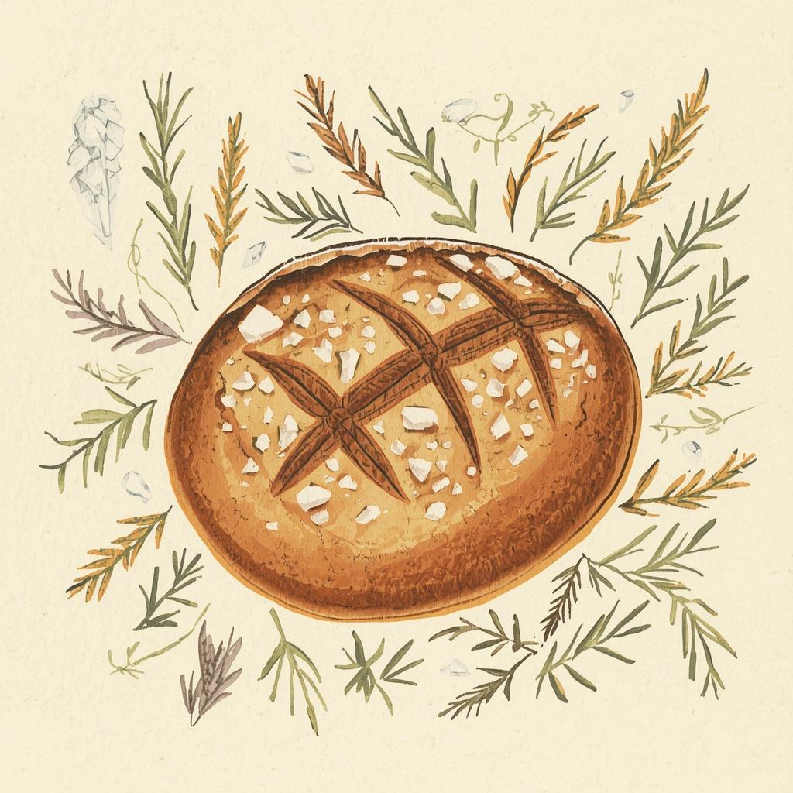

🍳 York Develops
The Prompt Kitchen
A free, practical knowledge base about getting real work done with AI tools — written for people who want techniques that work, not another explainer about how transformative everything is.
Today's Special
Today
Start cooking
Explore the kitchen
Recipe Book
Practical, tested prompts for every situation. Search, filter, and save your favourites.
Browse recipes → 📚Cookbooks
Curated prompt collections for specific situations. Each cookbook is a complete toolkit for a role or goal.
Browse cookbooks → 🍱Meal Prep
System prompts that transform any AI into a specialized assistant. Copy once, use forever.
See system prompts → 🫙The Pantry
Reusable prompt ingredients — the building blocks you can combine into any recipe.
Stock the pantry → 🛡️Kitchen Guardrails
Practical AI safety — not corporate policy. How to use AI responsibly without overthinking it.
Read the guardrails → 🧑🍳Kitchen Prep
The difference between a useful AI response and a generic one is almost always context. Here's what to give it and why.
Learn why context matters → 🍽️My Kitchen
Your saved recipes — stored right here in your browser. No account needed.
Open my kitchen →Featured
Featured recipes
Loading featured recipes…
From the kitchen
Gallery

Origin
Why I built it
The AI conversation has two speeds: breathless optimism from people who want you to believe it changes everything, and quiet frustration from people who tried it, found it annoying, and moved on. Neither of those groups is serving the people in the middle — people who sense there's something genuinely useful here but haven't found their way in yet.
I kept running into the same pattern: someone would mention they'd tried ChatGPT and found it useless for what they were doing. I'd ask a few questions, realize they were using it in a way that was almost designed to fail, show them a different approach, and watch it suddenly click. That conversation happened enough times that I decided to write it down somewhere anyone could find it.
The name comes from the idea that prompting is a skill — not a technical one, but a craft one, like cooking. You don't need to understand thermodynamics to make a good meal. You need to understand how the ingredients work together, what techniques produce what results, and when to trust your instincts versus the recipe. The Prompt Kitchen is where you learn those things.
It makes sense that I built it. I work with data systems that require clear, precise thinking about inputs and outputs. I care about making useful knowledge accessible. And I've spent enough time with these tools to have genuine opinions about what works and what doesn't — not as a researcher, but as someone who uses them to get things done.
🍳 Get cooking
Start with one recipe
Pick a recipe from the book, or learn why context is the ingredient that matters most.